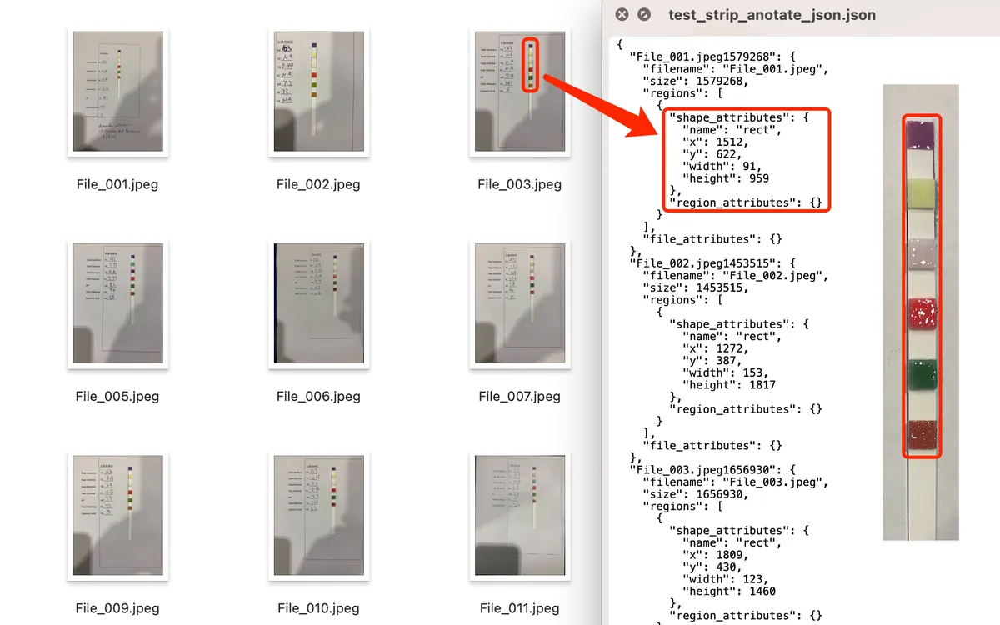
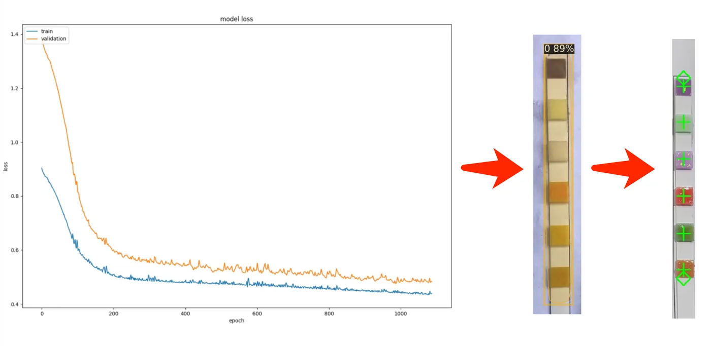
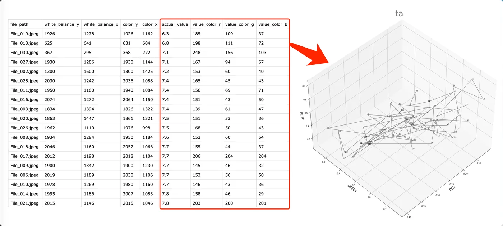
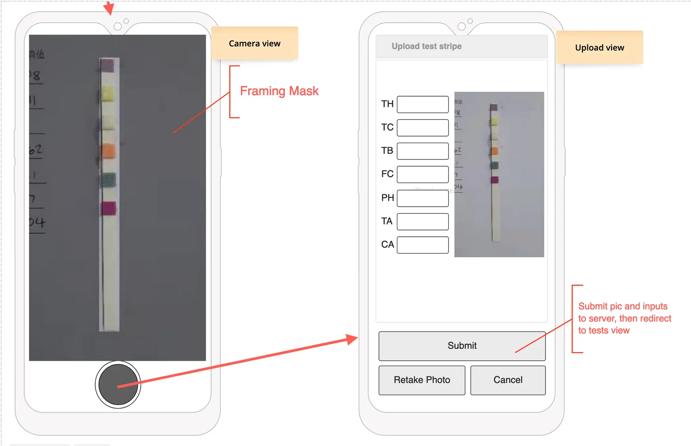

PoolHub
Pool-shop customers kept complaining that test strips are hard to read, especially with colour blindness. A friend who runs the shop asked for an IT answer.
- Designed a survey and collected 44 samples: machine-measured readings plus strip photos.
- Annotated strips and trained a YOLOv8 model to detect them.
- Normalised brightness and colour balance, read the RGB value of each pad.
- Trained and evaluated 7 supervised models to predict the readings.
- Designed a mobile app flow so customers can scan and read a strip.



